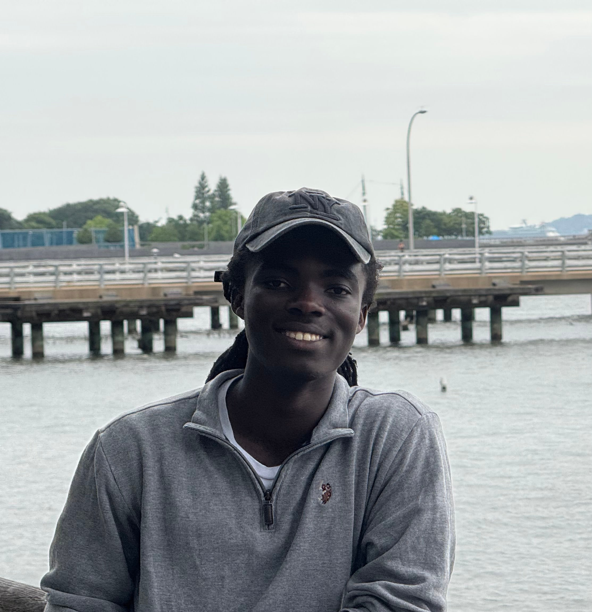

The correspondent
Tyrone Marhguy
Ghanaian. Computer Engineering ’28 at Penn, on a full scholarship. I build computers from discrete transistors to tapeout — and I set this paper.
I am Tyrone Iras Marhguy. Tomato is the machine in front of you: a 32-bit CPU from 74xx logic, boards you can probe, a journal for the arguments. For the personal backstory—from growing up in Ghana, to the Achimota court case, and the journey to Penn Engineering—you can read more on Wikipedia. For my full portfolio, résumé, and other projects, visit tmarhguy.com.
The work
This paper is Tomato. Discrete logic through PCB tapeout. The dual-LUT ALU is inbound. The rest of the catalog is still on the screen. I am also joining Pennovation to research FPGA utilization, and I contribute where the tools actually run: LibreLane, Verilator, OpenFPGA. The first board, before this one, was an 8-bit ALU from 3,488 MOSFETs. Professionally: Vero Electric on battery management, Aragorn AI on production backends. I have taught through Fife-Penn and, this summer, AR/VR with Howard STEM Achievers.
| On the bench | What it is |
|---|---|
| Tomato | 32-bit CPU · 74xx · this paper |
| 8-bit transistor ALU | 3,488 MOSFETs · 1.24M vectors · the origin board |
| 16-bit MAC, Sky130 | BFloat16 · OpenLane · TinyTapeout |
| 16×4 SRAM | 6T macro · 22 nm · StrongARM sense amp |
| NASDAQ ITCH parser | Market data on Artix-7 |
| UDP/IP stack | 100 Mbps · sub-200 ns loopback |
Off the bench: beach, dogs, sudoku, biking. The other paper — portfolio, résumé, the rest of the tree — is tmarhguy.com.